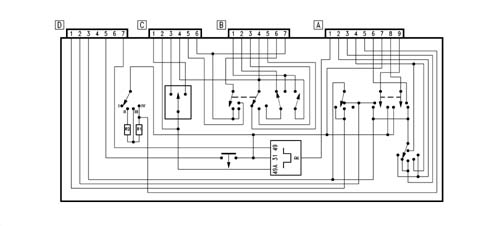
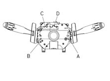
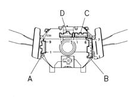
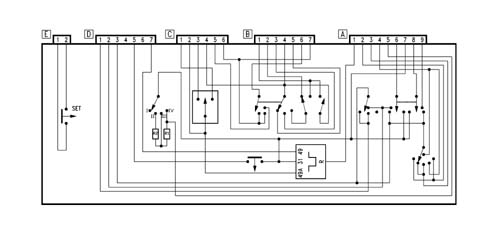
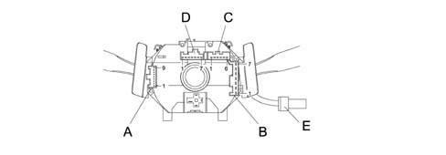

Introduction - MANOEUVRING AND WARNING SIGNALS
- Path
- Descriptions > 55 ELECTRICAL EQUIPMENT > 5550 MANOEUVRING AND WARNING SIGNALS > Introduction - MANOEUVRING AND WARNING SIGNALS
- Kind
- system description
- Applies to
- all engines; all production periods
- Interactive page
- https://sloeber94.github.io/elrnDB-a156/en/#/3239231
Applies to: all engines; all production periods
STEERING WHEEL STALK UNIT
There are two levers on the steering column switch unit which control the following functions:
- side lights
- dipped beams
- main beam headlamps
- turn signals
- windscreen wiper
- windscreen washer
- headlamp washers
Interior diagram
Refer to the illustration.

Front view
Refer to the illustration.

Rear view
Refer to the illustration.

Stalk unit pin-out
9-way connector A
1 N.C.
2 Windscreen wiper, high speed
3 Moderate speed wiper
4 Low speed wiper
5 Wiper intermittence output
6, Headlamp washer control
7 Earth
8, Windscreen washer pump
9, Windscreen washer pump
7-way connector B
1 Main beans
2 Dipped beams
3 N.C.
4, Supply controlled by the ignition (INT/A)
5 N.C.
6, Side lights supply
7, Supply controlled by the ignition (INT)
6-way connector C
1 Left-hand turn signal
2, Hazard warning lights control
3, Right direction indicator
4 N.C.
5 N.C.
6 N.C.
7-way connector D
1 N.C.
2 N.C.
3, Windscreen wiper supply
4 N.C.
5, Horns
6 N.C.
7, Hazard warning lights direct supply
Applies to: all engines; production: da 03/02 a 09/03, da 10/03
CONSTRUCTION FEATURES
STALK UNIT
There are two levers on the steering column switch unit which control the following functions:
- side lights
- dipped headlamps
- main beam headlamps
- direction indicators
- windscreen wiper
- windscreen washer
- headlamp washer
Interior diagram
Refer to the illustration

Rear view
Refer to the illustration

Stalk unit pin-out
Connector A, 9 way
Pin | Signal |
|---|---|
1 | N.C. |
2 | Windscreen wiper, high speed |
3 | Windscreen wiper brake |
4 | Windscreen wiper low speed/intermittent |
5 | Windscreen wiper intermittent device output |
6 | Headlamp washer control |
7 | Earth |
8 | Windscreen/rearscreen washer pump |
9 | Windscreen/rearscreen washer pump |
Connector B, 7-way
1 | High beams |
|---|---|
2 | Dipped beams |
3 | N.C. |
4 | Supply controlled by the ignition (INT/A) |
5 | N.C. |
6 | Side lights supply |
7 | Supply controlled by the ignition (INT) |
Connector C, 6-way
1 | Left direction indicator |
|---|---|
2 | Hazard warning light control |
3 | Right direction indicator |
4 | Supply controlled by the ignition (INT/A) |
5 | Rear fog lamps/dipped headlamps operation enablement |
6 | Supply controlled by the ignition (INT) |
Connector D, 7-way
relay | N.C. |
|---|---|
relay | N.C. |
3 | Windscreen wiper supply |
4 | N.C. |
5 | N.C. |
6 | N.C. |
7 | Hazard warning lights direct supply |
Connector E, 2-way
1 | Earth |
|---|---|
2 | Control through SET button |
Operation
For a description of associated linkages and control systems, see WIRING DIAGRAMS for the relevant electrical functions
Applies to: all engines; all production periods
For a description of associated linkages and control systems, see WIRING DIAGRAMS for the relevant electrical functions